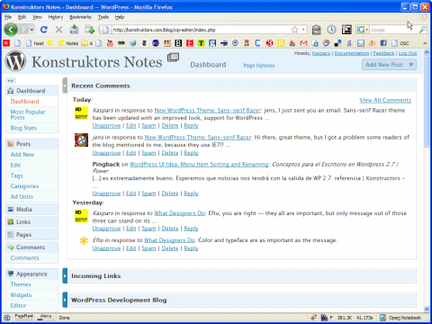
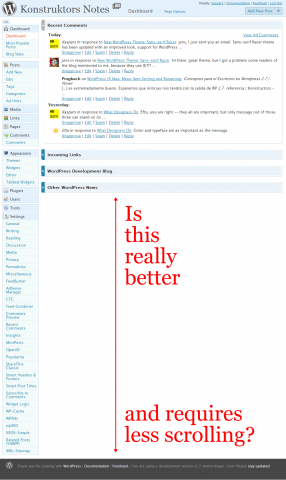

After having used the new WordPress 2.7 (which is not even beta yet) for some time, it is clear that the vertical dashboard navigation has been a bad design choice.
The aim of this revised design was to minimize vertical scrolling and make everything easier for both new and experienced users. The fact is that for me it has made the navigation more complex and has moved every action several clicks and scrolls away.
Why? Because information of equal importance cannot be aligned vertically. Items at the top will always have more importance than the ones at the bottom.
Another reason is the expanding and collapsing nature of this menu — every time the link you are looking for is in absolutely different position (in relation to browser chrome) depending on the menus that are opened.
Here are some screenshots of a real Dashboard from a real WordPress user:
{kind=link}

WordPress 2.7: Dashboard (note the scrollbar)
{kind=link}

WordPress 2.7 Dashboard navigation: real life experience
What do you think?
What has been your experience with WordPress 2.7 so far?
I don’t want to be too critical of it since they are trying and I kind of understand how they got there, but I honestly feel that they are not improving things.
There are some nice touches but the menu, for me, isn’t one of them.
It seems a little as though the menu is the result of trying to innovate when perhaps following tried and tested methods would be more appropriate given the uses to which it is put.
Andrew, you are absolutely right about Automattic trying to improve things, but as you said — menu probably isn’t the place for innovation.
The only thing I don’t like about the new navigation is the fact that it is vertical instead of horizontal.
At the same time they have done an amazing job by testing and optimizing menu labels, which I think are now better and easier to understand.
Most of the OS X applications are good examples of the number of items which vertical (and application-wide) menus can have — for example, iTunes has three top level menu items out of which only one is expandable.
I totally respect the WordPress community efforts and updates.
I believe that menu labels are now optimized to meet users’ needs.
Still, I should say that I vote against vertical menu because such a major change in usability may reflect negatively on productivity.
Have not read enough on the matter, surely they must have did some research.
As a user I express my disagreement and hope for a horizontal option when this update arrives on our desktops.
I’m sure we will see a lot of new WP-Admin themes coming up to restore the menu to its original state.
It’s a lot easier to hit the HOME and go back to the menu at the top.
Now, we need to search!
How many of those plugins require a full page for their settings? Could any of them hook into existing setting pages if the facility was available?
This would of course need an additional pointer from the plugins page – with each plugin installed having an additional settings link on that page to point people to the right place.
Rich, I don’t think that plugins are to be blamed this time. Every version of WordPress before this one had no problems dealing with even 50 dedicated settings pages.
I think that a centralized settings page would have been a good idea also in every previous version of WordPress. The fact, though, is that previously it would have been simply a nice feature, while now it is required to solve a huge usability problem.
I have been following the discussion on
wp-hackerslist about how to consolidate plugin settings, but I don’t think it will solve the original problem.Some plugins will require dedicated settings pages and the question will then be — how many such additional menu items are required to make the navigation unusable again.
I agree with you about the WP 2.7 vertical menu; I recently discovered the Ozh Admin Dropdown Menu plugin and it immensely improves the navigation of WP up to 2.6 – now I find it doesn’t work with the new menu in 2.7 – hopefully they might make the new menu an option in the final version of 2.7 rather than an obligation.
Guy, I have been using Ozh’s Admin Drop-down Menu since WordPress 2.5 and as you say — the new vertical navigation simply cannot compete with the simplicity and clear organization that the drop-down menus provide.
I know for sure that navigation will not be an option in 2.7. Lets hope Ozh’s finds the new navigation unusable enough to update (or maybe even rewrite, if necessary) the plugin.
I agree. That is way too much scrolling for my liking – hopefully there are still going to be some improvements before they go live though so I’m not going to be too harsh yet :P
What worries me is how plugins like nextGEN gallery that have their own admin menu pages will cater to this new vertical navigation…
Ciao,
Dan
I only hope there is no need for scroll down to use links.
Anyway, the best thing that should have been done was to make easy to develop plugins for the Admin Menu.
As important as the Theme.
I just updated, the vertical menu layout is atrocious.
BTW, I wonder who gave automatic the idea of going vertical when the whole world is going with horizontal tabs.
My install looks almost as the screenshot provided.
Good news, the new version of the Admin Dropdown Menu plugin is designed for 2.7 and very nice it is too. No need for the horrible vertical navigation!
I have to say that after using WordPress 2.7 for a few weeks and listening to Jane talk about the motives behind the new layout… it aint bad I am a convert to Vertical Navigation. The only thing I’d say about your screen shot is… who is using that many plugins to warrant a settings page that long ;)
I’ll still probably use admin drop down on some sites though. I think both have their merits and you should make your decision on a site by site basis :D
Dan, that’s me using those plugins. Now I have less of them, but still — not all links to settings pages fit into 800 pixels of vertical space when using the collapsed menu.
In terms of the utilization of the screen real estate, vertical menus make much sense as there is more width then height in a typical display monitor. I think the way to use the WP 2.7 menu system is in its iconic mode. It takes much less space, options are one click away upon hover, and always visible.
I am not a fan of drop down selections outside the obvious choices, like selecting years, states, and the like. Otherwise, the menu selections are always hidden with no hint of what may be possible. In this case, simplicity hides affordance and structure. Try the iconic version of the 2.7 menu and see what you think.
Cemal, thanks for your feedback. You are right — I have been using the iconic mode ever since it became available in early betas and I love it. This post was written when nobody had even mentioned that something like that could go into the core.
People using the compact/folded menu mode in WP 2.7 should try Tangofy — well, since I made it, I believe everyone should try Tangofy :-) but I think it is most useful when the menu is folded and the only indication of what is what is the tiny 16×16 icons.
Tangofy — Better icons for WordPress 2.7
http://op111.net/p65
That said, I think Kaspars hit the nail on the head, right from the start, about the issues with the new menu in 2.7:
1. Forces clicking and scrolling
2. Implies an hierarchy of importance
3. Moves items up and down relative to the chrome
The folded menu does not have any of these issues, but it should have more helpful icons by default.
Cheers